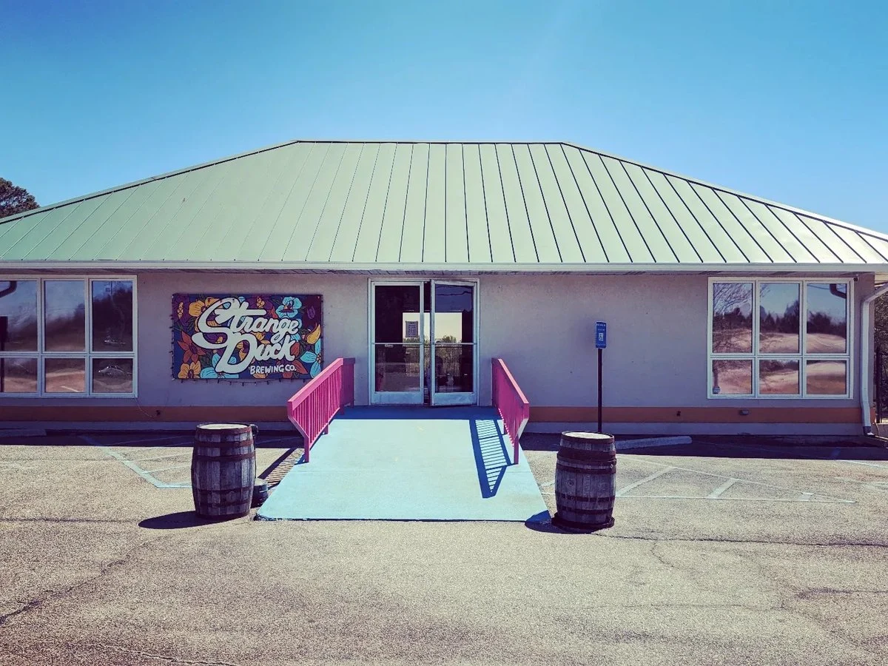

Family-owned. Independently minded. Made for bringing people together.

A new life for an old favorite.
FROM PLAYLAND TO POUR HOUSE
Some dreams are a little strange.
When Drake Scott and Kristan Robertson found a former fun park in Commerce, they saw more than an old mini-golf course. They saw a place where good beer and good company could take root.
In the fall of 2019, they began bringing the property back to life: clearing overgrowth, repairing the course, and turning the clubhouse into a brewery and taproom. Strange Duck opened in April 2020.
That spirit of reinvention is still at the heart of the place. The old go-kart track, open spaces, and mini golf are part of a brewery experience with a personality all its own.
THE PEOPLE WHO STARTED IT ALL
Meet the original flock.
A shared vision, a hands-on beginning, and a place that feels like a community.
DS
CO-FOUNDER
Drake Scott
The brewer and creative force behind Strange Duck’s beginnings. His recipes and vision helped turn a former fun park into a gathering place with a distinctly independent spirit.
And the name? A drake is a male duck. The rest comes from the wonderfully unusual mix of things happening here.
KR
CO-FOUNDER
Kristan Robertson
Kristan and Drake purchased the property together and set about giving it a new chapter. Their shared work transformed the old clubhouse and grounds into Strange Duck Brewing.
A family project that grew into a place for the whole community.
WHAT MAKES US, US
Serious about the beer. Playful about everything else.
01
Keep it curious.
Our rotating beers explore a broad range of styles, from familiar favorites to adventurous flavors.
02
Make room.
Bring friends, bring family, or find a new face at the bar. This is a place to spend time together.
03
Let it be different.
A round of mini golf, a little live music, a beer you haven’t tried. Take the scenic route.
YOUR NEXT GOOD TIME STARTS HERE
A little out of the way. A lot out of the ordinary.